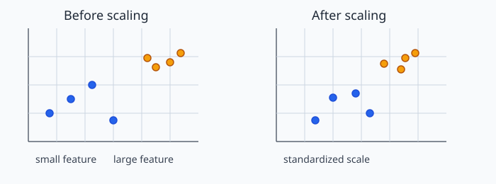
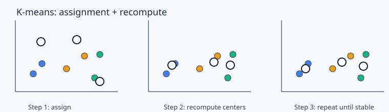
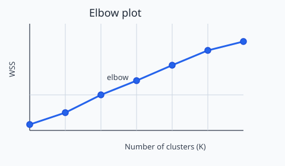
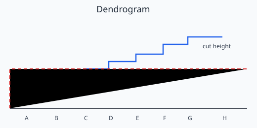

06 Clustering and Group Discovery#
Big Idea#
Clustering is an unsupervised learning task. Its goal is not to predict a known target. Its goal is to organize observations into groups based on how similar they are to one another.
This is useful when there are no labels to tell us the “right” groups ahead of time. A dataset may contain natural structure, but the structure is not always obvious, and different defensible choices can lead to different clusterings.
A good clustering workflow is therefore not a single algorithmic step. It is a sequence of decisions:
data → features → preprocessing → similarity → algorithm → parameters → evaluation → interpretation
Note
A cluster is not automatically a real-world category. It is an interpretation produced by a model using a chosen set of features and assumptions.
6.1 Why clustering matters#
Clustering helps us look for structure in unlabeled data. It is often used to:
group customers with similar behavior
identify repeated patterns in text or images
summarize large collections of food, products, or documents
explore whether data naturally separate into a few related subgroups
Unlike supervised learning, clustering does not start with a target variable and a known answer. Instead, we ask: if we group observations by similarity, what patterns emerge? That question is useful, but it also means the answer depends on the choices we make.
In practice, the same dataset can be clustered in different ways because the analyst has to decide:
which features matter
whether variables should be scaled
what it means for two observations to be similar
which algorithm to use
how many groups to request
whether the final clusters are meaningful
6.2 Similarity, distance, and feature choice#
A cluster is a group of observations that are more similar to one another than they are to other observations.
But “similar” is not a universal fact. It depends on the representation of the data and the distance measure we choose.
The most common idea for clustering is based on distance. If two observations are close together in feature space, they are considered more similar. In a simple two-variable example, we might look at points in a scatterplot and say that nearby points form a cluster.

Fig. 7 A simple clustering example: the same data can look much more grouped or much more mixed depending on whether the features are on comparable scales.#
Euclidean distance#
A common way to measure closeness is Euclidean distance. Intuitively, it is the straight-line distance between two points. Two observations are more similar when the direct distance between them is small.
This seems simple, but the distance calculation depends on the scale of the features. If one variable is measured in large numbers and another in small numbers, the variable with the larger numerical range may dominate the distance calculation.
That is why scaling is a modeling decision, not a mechanical rule. If we do not scale appropriately, clusters can reflect the measurement scale rather than meaningful structure.
Note
Clustering is not just a geometry problem. It is a representation problem. Features, scale, and preprocessing determine what the algorithm sees.
6.3 K-means as the main algorithm#
The best-known clustering algorithm for a first course is K-means. It is a partitioning method: it tries to divide the data into K groups by repeatedly updating cluster centers.
The workflow is intuitive:
Choose the number of clusters, K.
Place K initial centers in the feature space.
Assign each observation to the nearest center.
Recalculate each center as the mean of the observations assigned to it.
Repeat until the assignments stop changing.

Fig. 8 The K-means workflow: assign observations to the nearest center, update the centers, and repeat until the solution stabilizes.#
Why K-means can be unstable#
K-means is useful, but it is sensitive to initialization. Different random starting points can produce different final cluster assignments. This is not a bug in the algorithm; it is a reminder that clustering is not a single objective truth waiting to be discovered.
This is why many implementations use multiple random starts. The algorithm tries several initializations and keeps the solution with the best overall fit. Even then, the result depends on the data, the features, and the chosen K.
What K-means is and is not#
K-means works best when clusters are roughly compact and have a center-like structure. It is less natural when clusters are irregularly shaped or when different groups have very different sizes and densities.
This matters because K-means does not know the “true” groups. It just finds a solution that minimizes within-cluster distance under the chosen setup.
6.4 Choosing K and assessing cluster quality#
The number of clusters, K, is one of the most important modeling decisions in clustering. There is usually no one obvious answer.
A common diagnostic is the elbow plot, based on within-cluster sum of squares (WSS), also called inertia. WSS measures how tightly the observations are grouped around their cluster centers. As K increases, WSS usually decreases. That does not automatically mean the larger K is better.

Fig. 9 An elbow plot shows that WSS drops as K increases, but the elbow is only a heuristic hint; it does not prove the true number of clusters.#
A plot may show a bend or elbow, but that bend is only a clue. It may point to a reasonable K, but it is not an objective truth. A modeler still needs to ask whether the chosen clusters are interpretable, stable, and useful.
Another popular diagnostic is the silhouette score. It compares how close points are to other points in their own cluster versus points in neighboring clusters. Higher silhouette values suggest that clusters are more separated and internally cohesive.
Note
WSS and silhouette score are evidence for a clustering decision. They are not a magical detector of the one correct number of clusters.
Students should therefore treat K as a judgment call informed by diagnostic evidence and practical interpretation, not as a hidden fact encoded in the data.
6.5 Hierarchical clustering in brief#
A second major approach is hierarchical clustering. Instead of starting with a fixed K, it builds a sequence of cluster merges.
The process starts with every observation in its own cluster. Then the two most similar clusters are merged, and the process continues until all observations are in one cluster.
The result is often shown as a dendrogram.

Fig. 10 A dendrogram shows the order of merges. Cutting the tree at a chosen height creates a set of clusters.#
A dendrogram is valuable because it makes the nesting structure visible. If we cut the tree at a different height, we get a different number of clusters. This is another reminder that clustering is not only about the algorithm; it is also about where we decide to stop and what level of detail is meaningful.
The specific way a cluster is judged to be similar to another cluster is called linkage. Common linkage choices such as single, complete, average, and Ward can produce different cluster structures. Linkage is another modeling decision.
6.6 Interpreting cluster labels#
Once a clustering algorithm runs, it produces labels such as:
Cluster 0
Cluster 1
Cluster 2
These labels are just identifiers. They are not explanations. A cluster label is only meaningful after we inspect what is inside the cluster.
A careful interpretation asks:
Which observations ended up together?
What features distinguish this cluster from others?
Are the clusters easy to explain in the context of the problem?
Would a domain expert see the same pattern?
Do the cluster assignments remain sensible under reasonable alternative choices?
This matters because it is easy to confuse a numerical cluster label with a real-world category. A clustering algorithm does not automatically discover natural groups; it discovers patterns that depend on how the problem was defined.
Note
Cluster labels are not natural facts. They are outputs that require interpretation.
6.7 Evaluating whether a clustering result is useful#
A cluster solution should not be judged only by its mathematical neatness. It should also be judged by whether it is useful and trustworthy.
At an introductory level, we can ask whether the clusters are:
tight: observations within a cluster are close together
distinct: different clusters are separated from one another
interpretable: the groups make sense to a human expert
stable: the results do not change dramatically under reasonable alternatives
This last point is especially important. A clustering result is more convincing if it remains roughly similar when we vary defensible choices such as:
scaling or normalization
selected features
K
initialization
linkage choice
This is not a formal statistical procedure. It is a practical reasonableness check. If a clustering result changes dramatically when a minor decision changes, we should treat it cautiously.
6.8 AI-era checkpoint#
Generative AI can often produce a polished clustering interpretation quickly. For example, an AI assistant might say:
“The elbow plot proves that this dataset has three natural groups.”
That statement is too strong.
An elbow plot provides evidence, not proof. It helps us evaluate a possible K, but it does not reveal the one true clustering in the data. A responsible interpretation would ask:
Did we use the right features and preprocessing?
Is the chosen K defensible beyond the elbow plot?
Do the clusters look meaningful in context?
Are the results stable under reasonable alternatives?
This is exactly the kind of critical evaluation students should practice. AI can generate interpretation quickly, but humans still need to decide whether the interpretation is evidence-based and trustworthy.
Key Takeaways#
Clustering is an unsupervised learning task used to search for structure in unlabeled data.
Similarity depends on features, scaling, and modeling choices, not just on the data itself.
K-means is the central introductory algorithm: choose K, initialize centers, assign points, update centers, and repeat.
WSS and silhouette are useful diagnostics, but they do not reveal a single objective truth.
Hierarchical clustering gives a nested view of structure through dendrograms and linkage choices.
Cluster labels are identifiers, not explanations.
A good clustering result is useful, interpretable, and reasonably stable under defensible changes.
The primary job is not to treat clustering as a black box. It is to evaluate whether the groups are sensible and credible.
References#
Yu, B., & Barter, R. Veridical Data Science. Chapter 7: Clustering. https://vdsbook.com/07-cluster
Yu, B., & Barter, R. Veridical Data Science. Book